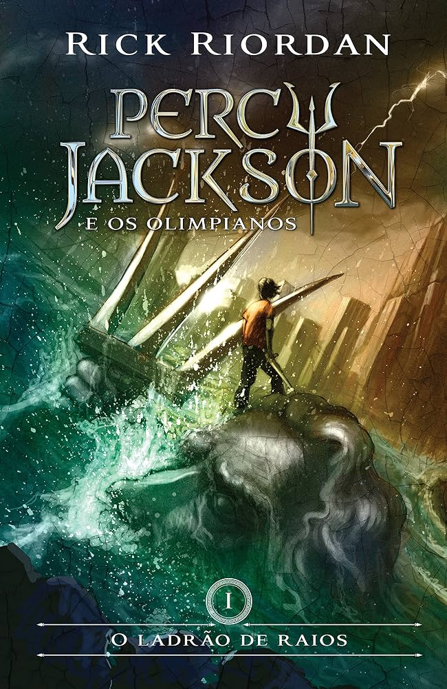
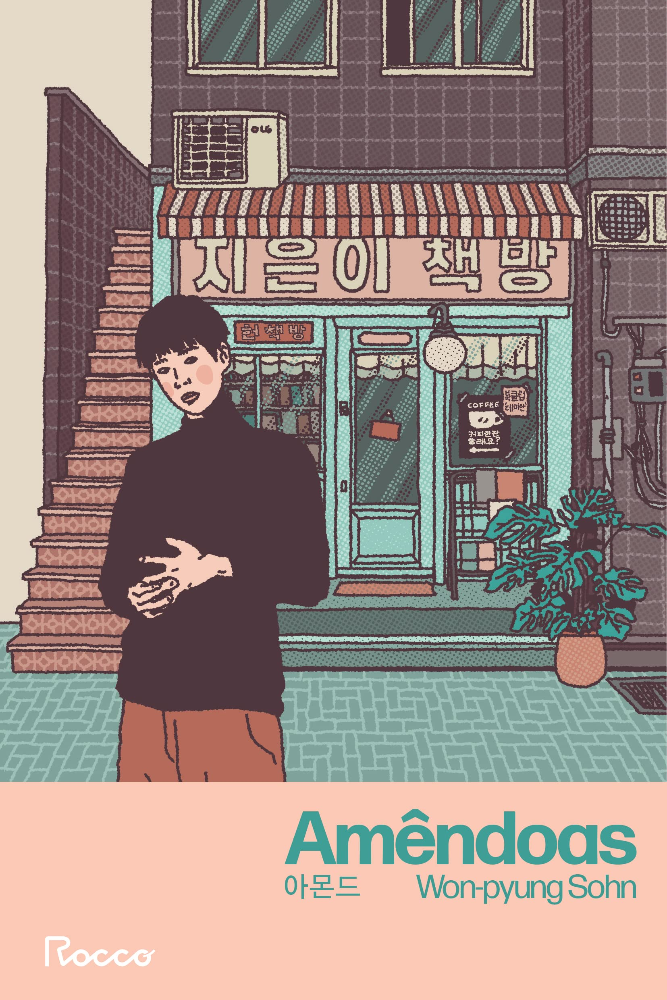
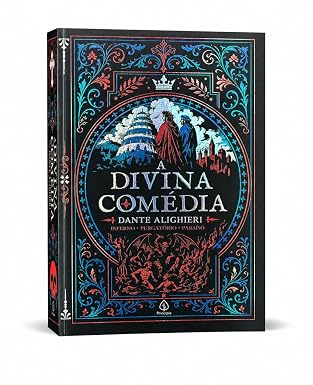
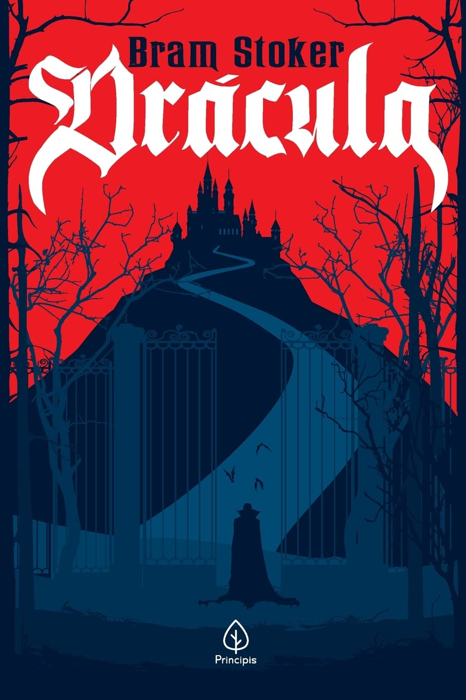

Conteúdos de diferentes áreas do conhecimento.
Conhecimento que acompanha você
Sua próxima
ideia começa aqui.
Um espaço para descobrir novos caminhos, aprofundar seus estudos e transformar curiosidade em conhecimento.
Conheça nosso acervoAprender abre portas.
Explore sem limites.
Explore sem limites.
BIBLIOTECA DIGITAL UNIFECAF • ESTUDE NO SEU RITMO
Um lugar para ir mais longe
Conhecimento para
cada descoberta.
A biblioteca conecta você a livros, materiais acadêmicos e recursos que dão suporte a cada etapa da sua formação.

Estudar também é explorar. Reunimos conteúdos para apoiar sua rotina acadêmica e inspirar novas perguntas — da primeira pesquisa ao próximo grande projeto.
Descubra o acervoUma experiência clara para encontrar inspiração.
Um espaço de aprendizagem que acompanha você.
Leituras para ampliar ideias e possibilidades.
Leituras em destaque
Ideias que valem
uma página a mais.
Uma seleção para alimentar sua curiosidade e acompanhar seus estudos.




Seleção ilustrativa para a proposta acadêmica. Consulte a disponibilidade dos títulos no catálogo oficial da instituição.
Perto de você
A biblioteca também
é ponto de encontro.
Encontre espaços para estudar, pesquisar e trocar ideias. Confira as unidades UniFECAF.

01 / CAMPUS
Taboão da Serra
Um ambiente universitário para aprender, conviver e construir novos projetos.
Informações da unidade ↗
02 / CAMPUS
São Paulo
Espaços de apoio à aprendizagem para acompanhar sua jornada acadêmica.
Informações da unidade ↗
03 / CAMPUS
Seu próximo capítulo
Consulte os canais oficiais para conhecer os serviços e espaços disponíveis.
Fale com a biblioteca ↗Endereços e serviços devem ser confirmados nos canais oficiais da UniFECAF.
Conte com a gente
Sua jornada de
aprendizagem continua.
Precisa de ajuda para encontrar um material ou conhecer os serviços da biblioteca? A equipe pode orientar você.
Acesse os canais UniFECAF IDEIAS CRESCEM QUANDO SÃO COMPARTILHADAS
IDEIAS CRESCEM QUANDO SÃO COMPARTILHADAS